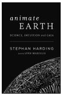

the politics and practice of sustainable living
可持续生活的政治和实践
CHELSEA GREEN PUBLISHING
切尔西 · 格林出版社
Chelsea Green Publishing sees books as tools for effecting cultural change and seeks to empower citizens to participate in reclaiming our global commons and become its impassioned stewards. If you enjoyed Thinking in Systems, please consider these other great books addressing the complexities of the global society and planet that we all share.
切尔西绿色出版公司将书籍视为实现文化变革的工具，并寻求赋予公民权力，让他们参与收回我们的全球公共资源，成为其充满激情的管理者。如果你喜欢在系统中思考，请考虑这些其他伟大的书籍，解决全球社会和地球的复杂性，我们都分享。
Dazzle Gradually
Reflections on the Nature of Nature
LYNN MARGULIS and DORION SAGAN
Foreword by ROALD HOFFMANN
ISBN 978-1-933392-31-8
Paper · $25.00
渐渐地让人眼花缭乱
关于自然本质的思考林恩 · 玛格丽斯和多里安 · 萨根前言罗尔德 · 霍夫曼 ISBN 978-1-933392-31-8 Paper · $25.00

Animate Earth
Science, Intuition, and Gaia
STEPHAN HARDING
ISBN 978-1-933392-29-5
Paper · $25.00
动画地球科学，直觉，和盖亚斯蒂芬 · 哈丁 ISBN 978-1-933392-29-5 Paper · $25.00

Mind, Life, and Universe
Conversations with Great Scientists of Our Time
LYNN MARGULIS and EDUARDO PUNSEt, eds.
Foreword by DAVID SUZUKI
ISBN 978-1-933392-43-1
Paper · $21.95
思想，生命，宇宙
与当代伟大科学家的对话
林恩 · 马古利斯和爱德华多 · 庞塞特编辑前言大卫 · 铃木 ISBN 978-1-933392-43-1 Paper · $21.95
Notes from the Holocene
A Brief History of the Future
DORION SAGAN
ISBN 978-1-933392-32-5
Paper · $14.95
全新世的笔记
未来简史 DORION SAGAN ISBN 978-1-933392-32-5 Paper · 14.95美元
For more information or to request a catalog,
visit www.chelseagreen.com or
call toll-free (800) 639-4099.
欲了解更多信息或要求目录，请访问 www.chelseagreen. com 或拨打免费电话(800 -)639-4099。
Table of contents
- Title Page
- Copyright Page
- Dedication
- Contents
- A Note from the Author
- A Note from the Editor
- Introduction: The Systems Lens
- Part One: System Structure and Behavior
- Part Two: Systems and Us
- Part Three: Creating Change—in Systems and in Our Philosophy
- Appendix
- Notes
- Bibliography of Systems Resources
- Editor’s Acknowledgments
- About the Author